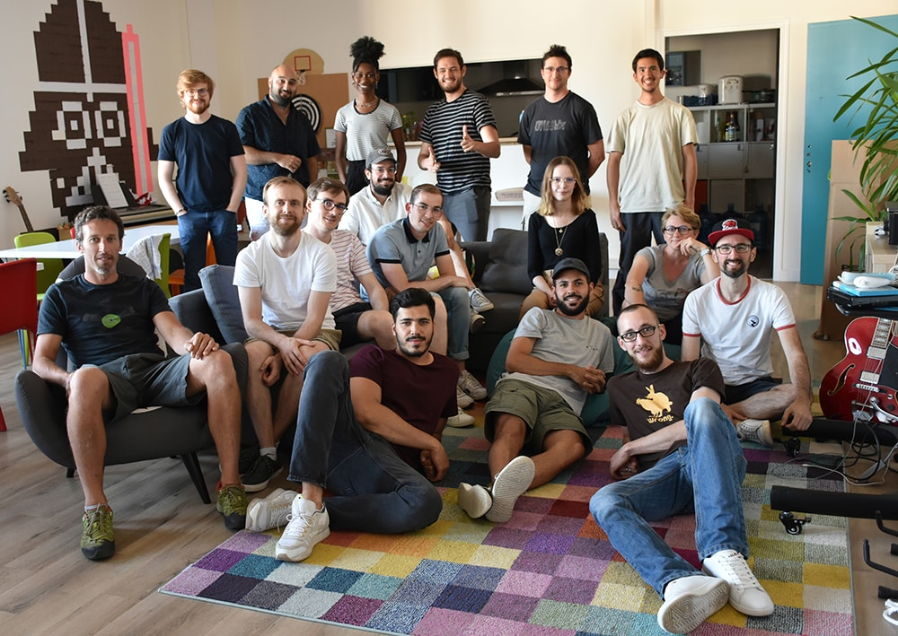

Projection pro
Projection pro
A la suite de mon stage, je vais effectuer une alternance chez Yes We Dev, par le biais de l'école O’Clock pour une formation qui durera 16 mois. j’ai passé avec réussite l’examen d’entrée.
Son programme, délivre un titre professionnel de « Concepteur Développeur d’application » équivalent à un BAC + 3/4
Mon but final, être embauché chez Yes We Dev en tant que développeur web, d'y faire un bon bout de chemin, gagner en expériences et peut êtreplus tard devenir Freelance, l'avenir me le dira.
Une chose est sûre, j’aime cette entreprise, je veux la voir grandir et grandir avec elle et mes collègues.
